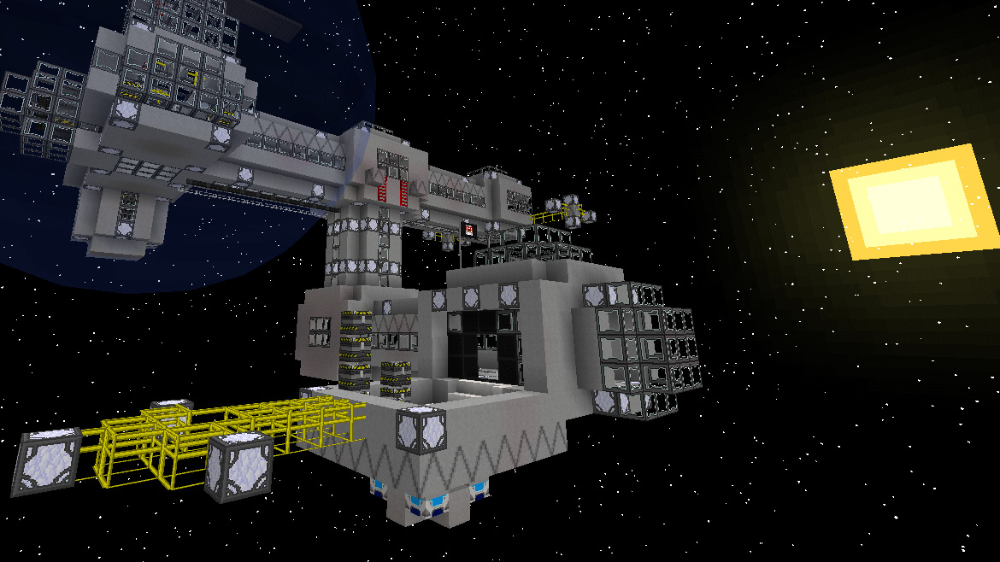

Minecraft es un videojuego que se caracteriza por su infinidad de opciones de las que disponemos a la hora de jugar, podemos crear nuestro mundo y dejar llevar nuestra creatividad construyendo extensas construcciones, así como entrando en profundas fortalezas ya sea en las nubes o debajo del mar.
Por otra parte, podemos ir al modo multijugador en donde podemos jugar diferentes modos de juego con amigos ya sean sky wars, survival games, prop hunt y muchos juegos mas, las posibilidades son múltiples.
En esta sección vamos a hablar un pocos mas general de Minecraft, luego ya en otros enlaces entraremos mas en detalles.
Minecraft no presenta ningún objetivo concreto, es decir, no tiene ninguna historia que siga una determinada linealidad, si no que es totalmente libre, tu decides cuando te has pasado minecraft, simplemente descubre mundo realiza diferentes crafteos con los cuales obtener herramientas a partir de materias primas que has ido encontrando por el mundo, cumple los diferentes logros que te ofrece el juego...
Es un juego en el que se encuentran presentes diferentes dimesiones como el nether o el end y biomas como la selva, jungla, montaña...
Se pueden agregar multiples biomas nuevos y mobs(enemigos) los cuales pueden hacer nuestra aventura mucho mas entretenida, pero ¿Cómo podemos hacer esto? Esto es gracias a los mods.
Los mods son extensiones de software que modifican el videojuego original proporcionando nuevas y novedas opciones al jugador.
Algunos de los diferentes mods que podemos destacar son el Too Many Items, el Reis Minimap, el Galacticraft...
 Galacticraft Mod